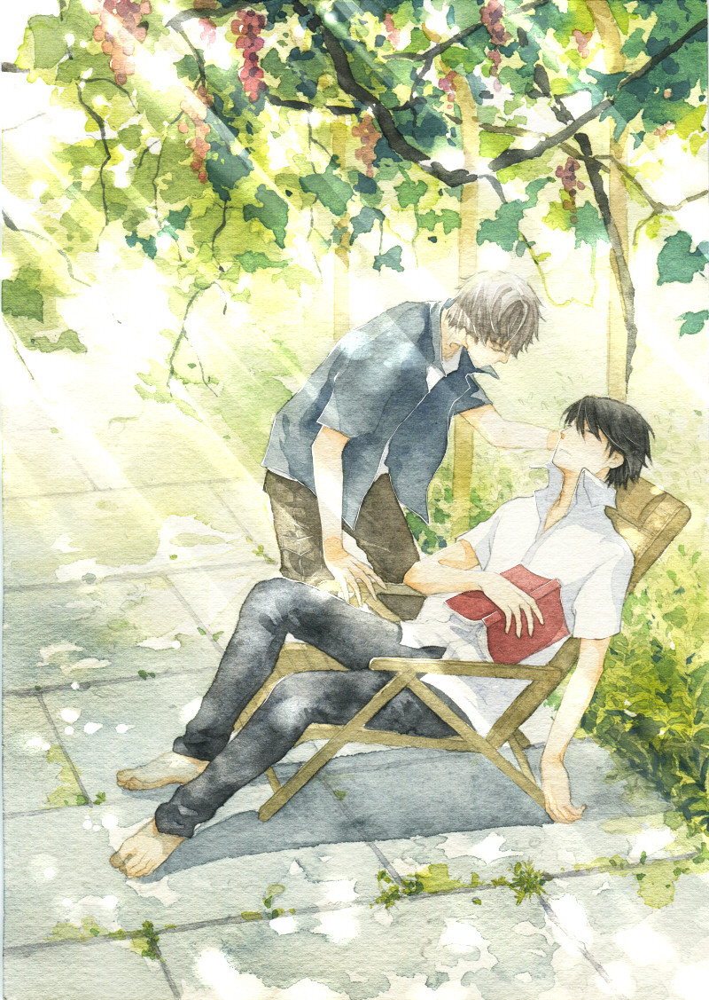
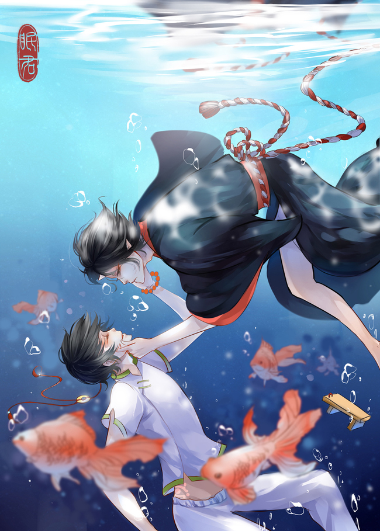

撒野/读后感(一)：太长只好写书评了
发现这本书是因为前段时间在喜马拉雅上面听《麒麟》的有声书，
正好看到那个主播有在更新这本书，就想着地铁上没事翻翻。看到
有些人评论说这本书开始很平淡，后面才精彩，但我却是从一开始
就被吸引了。从看到蒋丞在火车站“捡到”顾淼后，给顾飞打
电话的时候，就觉得文风和语言都很喜欢，就是那种看着很生活，
但是有时候又能让人会心一笑的感觉。

文是真的长，看好长时间进度条才动一格，回过头想想有没有什么
特别惊天动地的情节，但是看的时候却能一直很吸引我看下去，常
常不知不觉就看到了深夜（其实是凌晨...）。现在终于看完了，
虽然不舍得，但是也觉得是个挺好的结尾，总觉得他们不像是小说
中人物，像是真是存在的。丞哥，顾飞，在城市的某个角落，继续
着他们的生活。

因为真的很喜欢，所以用我这种小学生文笔写了第一篇评论。五星
推荐给所有人！